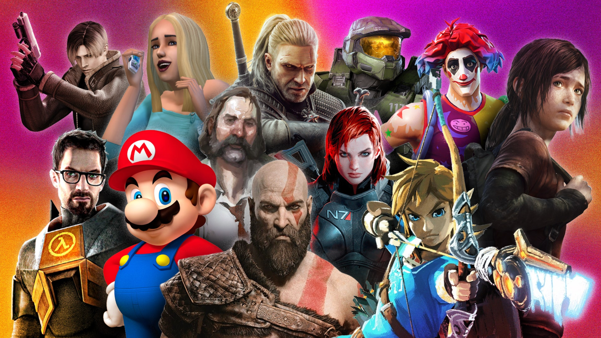
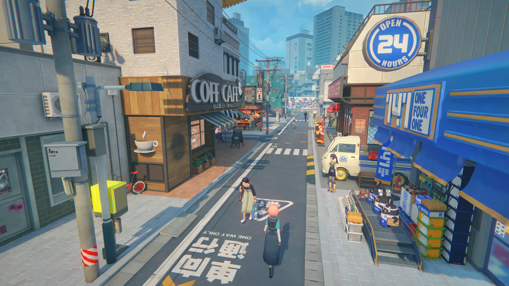
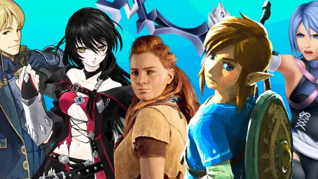
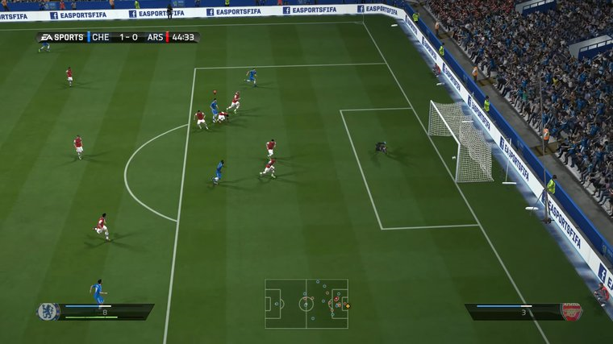
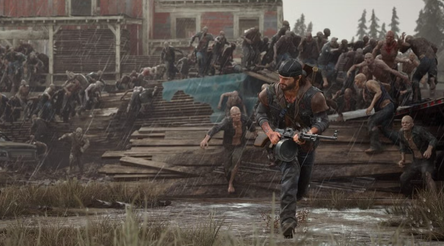
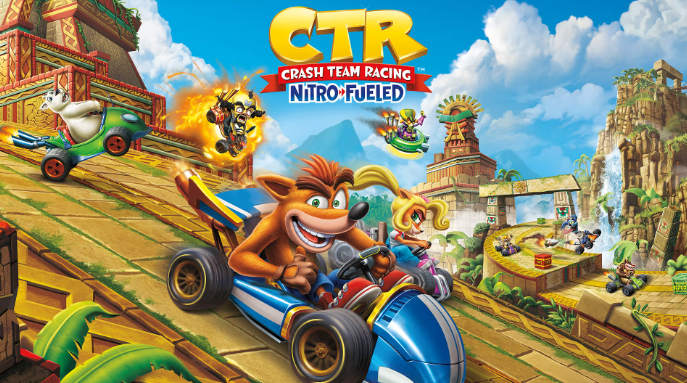
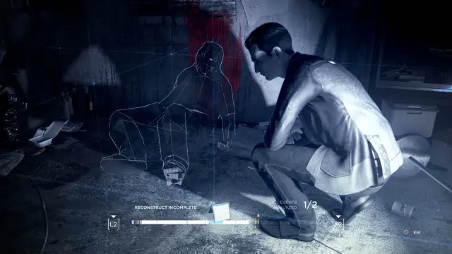

¿Qué son?
Un videojuego es un programa informático interactivo que se ejecuta en un dispositivo electrónico para que uno o más jugadores participen y cumplan objetivos específicos. A diferencia de una película o un libro, el usuario no solo observa, sino que toma decisiones activas que cambian lo que pasa en la pantalla

Los principales generos son:
Acción/Aventura
juegos donde el jugador controla un personaje a través de desafíos físicos, combates y exploración, combinando reflejos rápidos con resolución de puzzles o avance narrativo. Ejemplos: The Legend of Zelda, Grand Theft Auto

RPG (Rol)
Juegos donde el jugador desarrolla y personaliza un personaje que gana experiencia, sube de nivel y toma decisiones que influyen en la historia y el mundo del juego. Ejemplos: The Witcher, Final Fantasy

Deportes/Simulación
Juegos que recrean actividades deportivas o situaciones de la vida real de forma realista, buscando imitar las reglas y mecánicas del mundo físico. Ejemplos: FIFA/EA Sports FC, The Sims

Selección de videojuegos destacados
-
Days Gone
Mundo abierto post-apocalíptico con zombies, buena historia sobre lealtad y supervivencia, y un sistema de moto muy satisfactorio para explorar.

-
Crash Team Racing (CTR)
Kart racing clásico, divertido, con curva de dificultad desafiante y nostalgia pura para quienes crecieron con PlayStation.

-
Detroit: Become Human
Narrativa interactiva impresionante, decisiones que realmente cambian la historia, y una reflexión profunda sobre inteligencia artificial y humanidad.
